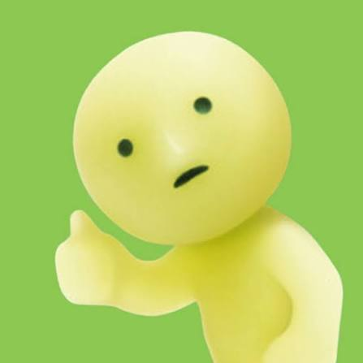
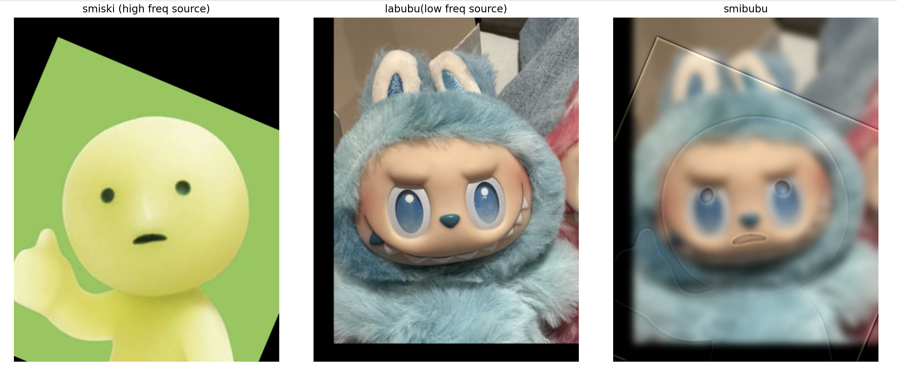
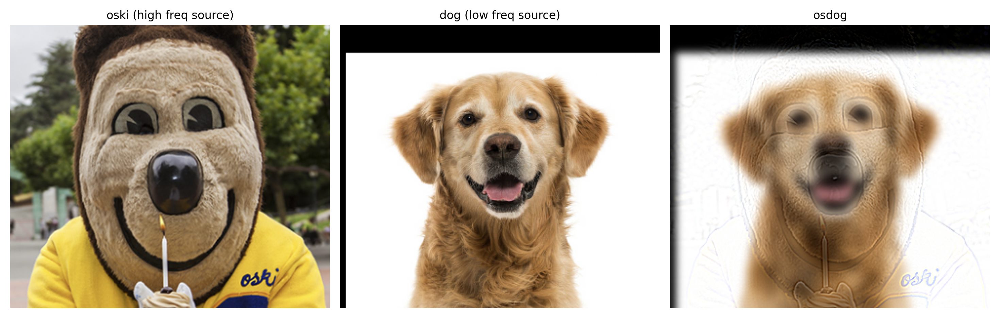
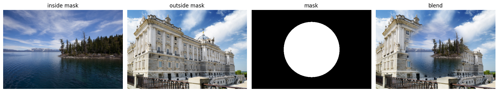
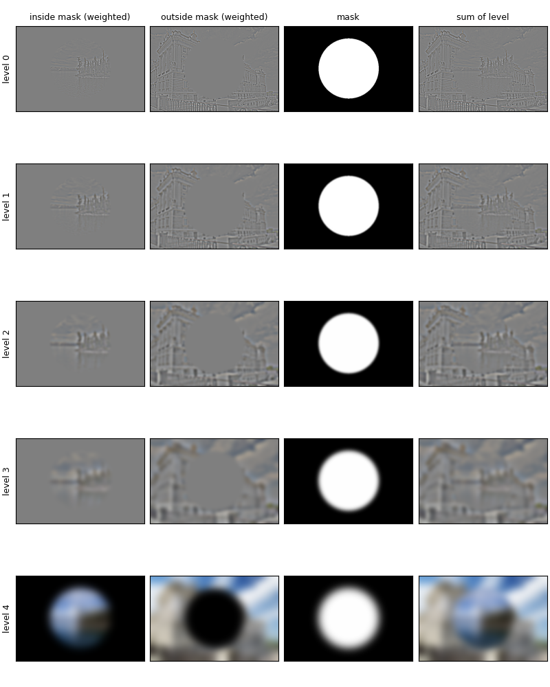
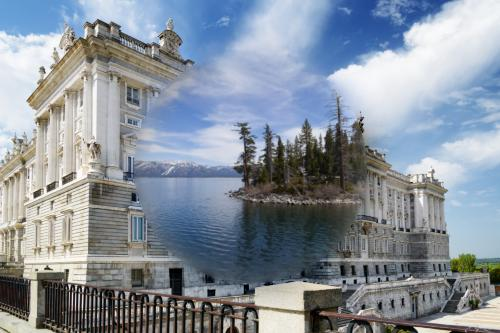

Implemented with four loops, then two loops, in numpy only. The kernel is flipped and the image is zero-padded to "same" size (k // 2 on top/left, remainder on bottom/right, so even-sized kernels work).
def conv2d_2loops(img, kernel):
kh, kw = kernel.shape
H, W = img.shape
flipped = np.flip(kernel)
pt, pl = kh // 2, kw // 2
pb, pr = kh - 1 - pt, kw - 1 - pl
padded = np.pad(img, ((pt, pb), (pl, pr)))
out = np.zeros((H, W))
for i in range(H):
for j in range(W):
out[i, j] = np.sum(padded[i:i+kh, j:j+kw] * flipped)
return outRuntime and boundaries: Scipy is compiled and much faster than the Python loops; the two-loop version is faster than the four loops because the inner products are vectorized. Boundaries: mine and scipy's both treat pixels outside the image as 0, which darkens borders for the box filter and creates artificial edges for the finite differences.


Dx = [1, 0, -1], Dy = [1, 0, -1]T. Gradient magnitude is sqrt(gx² + gy²).


Threshold justification: Lower thresholds kept grass and sensor noise; higher ones broke the tripod and coat outline. I chose 0.24 because it kept major shapes like the cameraman and camera without completely showing the minor details.
Gaussian from cv2.getGaussianKernel with sigma = 2, size 13, 2D kernel from the outer product with its transpose. DoG filters are G * Dx and G * Dy.


Comparison with finite differences: Smoothing removes grass and speckle noise, edges become thicker and smoother, and gradient magnitudes drop so the threshold is lower.
Sharpened = f + α (f − f*g) = f * [(1 + α) e − α g], where e is the unit impulse. The blur f*g keeps low frequencies, so f − f*g isolates high frequencies, and adding α times them back strengthens edges and texture. The kernel sums to 1, so flat regions are unchanged.
unsharp_filter = identity + alpha * identity - alpha * gaussian


Observations: At large alphas, large halos appear.

| α | 0.5 | 1 | 1.5 | 2 | 3 | 4 |
|---|---|---|---|---|---|---|
| mean abs error vs original | 7.18 | 6.63 | 6.26 | 6.09 | 6.27 | 7.02 |
Blurred baseline: 7.89. Error is lowest near α ≈ 2 and never reaches 0, since blurring permanently removes high-frequency detail that unsharp masking cannot reconstruct.


Cutoff choice: high-pass σ1 = 4, low-pass σ2 =8. Larger σ means a lower cutoff; I tried several pairs and picked this one because this one keeps derek's overall silhoette while nutmeg's high freq isn't too dominating.







Notes / failures: I tried adding smiski's face onto labubu because it has a simpler sihloette and failed a few times because they didn't align. I fixed it by changing the size of smiski's face. For Oski and the dog, I chose a golden retriever because they are my favorite kind, and I saw Oski the other day so I wanted to see what the combination is like. It is not the best combination but I thought it was cool.
No downsampling: every level is full size. Level i of the Gaussian stack blurs the original with σ·2i−1 (σ = 2, 5 levels), using a separable Gaussian for speed. The Laplacian stack stores differences of adjacent Gaussian levels plus the final blurred image, so its levels sum to the original (check: np.allclose = True).


Each level is blended with its own mask: Σ mask_i · LA,i + (1 − mask_i) · LB,i, where mask_i is the Gaussian stack of the mask. Fine detail switches sharply at the seam while low frequencies transition gradually.







Reflection: My first attempt used color-threshold masks from the character images, which left holes in white and black regions, so I switched to geometric masks. I then tried to change the
The most important idea for me was that an image is a sum of frequency bands, and almost every technique in this project is a way of treating those bands differently. Blurring keeps the low band, subtracting the blur isolates the high band, and a Gaussian pyramid or stack separates the image into many bands at once. Unsharp masking boosts the high band, hybrid images show different bands at different viewing distances, and multiresolution blending uses a sharp seam for fine detail and a wide, soft seam for color and shading. Before this project these felt like unrelated tricks; now they read as the same operation with different choices of which band to keep, scale, or blend.
Two smaller lessons support this. First, implementation details matter: padding and the kernel flip, matching sigma and kernel size, working in a consistent value range, and clipping before saving or displaying all changed the results, and several of my bugs came from skipping one of them. Second, a good metric is not the same as a good-looking result. Unsharp masking reduced error the most at α ≈ 2, but it can never recover detail the blur removed, so sharpening is an illusion of detail rather than a reconstruction. Edit this section to reflect your own takeaway, and add a specific moment from the project that changed how you think about it.